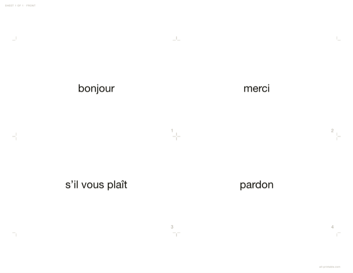

Double-sided flashcards where the backs actually land on the right cards. That sounds obvious and it is the thing most free flashcard sheets get wrong: flipping a sheet on its long edge reverses the column order, so the back of the top-left card has to print top-right.
Open the maker Free · no sign-up · nothing uploaded

| Duplex | Both flips |
|---|---|
| Sizes | Any |
| Marks | Crop or cut |
Choose Print, then pick Save as PDF as the destination if you want a file. Set scale to 100% and margins to None — the sheet already carries its exact paper size, so the browser must not rescale it. Anything else and the dimensions you chose are no longer the dimensions on the page.
Match it to your printer’s duplex option. Long-edge is the usual default.
The ordering is asserted rather than eyeballed: for every back slot, where it lands after the physical flip must equal the front position of the card it holds.